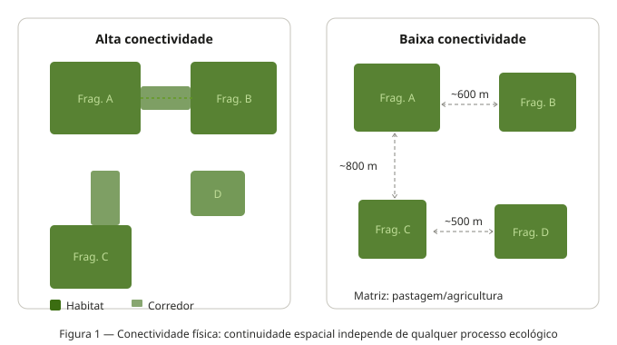
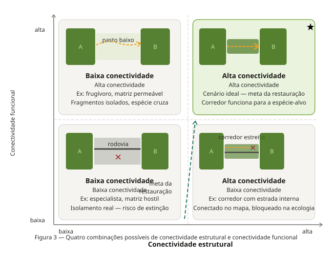

Slides desta aula
Tela cheia CLIQUE AQUI e depois pressione ‘f’
Introdução
Imagine dois fragmentos de Mata Atlântica separados por uma estreita faixa de vegetação ciliar. Pelo mapa de satélite, os três polígonos se tocam — estão fisicamente unidos. Mas uma onça-parda (Panthera onca) consegue usá-los como um único território contínuo? E um besouro especialista em interior de floresta? E um fungo que só se dispersa por vento dentro do dossel?
A resposta, invariavelmente, será: depende da espécie. E é exatamente essa dependência que separa dois conceitos fundamentais da Ecologia de Paisagens que frequentemente são confundidos na literatura e, mais ainda, no planejamento conservacionista:
- Conexidade (connectedness ou contiguity): uma propriedade estrutural da paisagem
- Conectividade (connectivity): uma propriedade funcional da paisagem, que envolve organismo e estrutura simultaneamente
Compreender a diferença entre eles não é apenas exercício teórico. É a base para decidir onde intervir, para quem e como em qualquer esforço de conservação ou restauração de paisagens.
Conectividade (Conexidade) Física: a geometria da paisagem
Definição
A conexidade física (também chamada de conectividade estrutural) descreve o grau em que os elementos da paisagem estão fisicamente contíguos ou próximos no espaço, independentemente de qualquer processo ecológico. É uma propriedade mensurável a partir de um mapa, uma imagem classificada ou um modelo digital de ocupação do solo — sem necessidade de qualquer dado biológico.
Em termos operacionais, dois fragmentos são estruturalmente conectados quando:
- Compartilham uma borda comum (adjacência direta), ou
- Estão dentro de um limiar de distância previamente definido (proximidade).

Mapa de uso do solo binário (habitat / não-habitat) com fragmentos numerados, mostrando pares de fragmentos conectados por borda comum vs. pares separados por distância variável. Idealmente, um par de mapas: um com conexidade alta (manchas que se tocam) e outro com conexidade baixa (manchas dispersas). Fonte sugerida: imagem classificada de paisagem do Nordeste ou da Mata Atlântica.
O que a conexidade mede — e o que ela não mede
A conexidade responde perguntas como:
- Qual a proporção da paisagem formada por habitat contíguo?
- Quantos fragmentos estão a menos de 500 m de outro fragmento?
- Qual o maior bloco contínuo de vegetação nativa nesta paisagem?
Para medi-la, usamos métricas como o Índice de Contiguidade (CONTIG), a distância ao vizinho mais próximo (ENN — Euclidean Nearest Neighbor Distance) e o índice de proximidade (PROX), todos disponíveis no pacote landscapemetrics.
O que ela não mede: se um organismo real consegue de fato se mover entre os fragmentos, se a matriz entre eles oferece resistência maior ou menor para diferentes espécies, ou se o corredor que os conecta fisicamente é funcional para a espécie de interesse.
Exemplo: o corredor que existe no mapa mas não na ecologia
Considere uma faixa de vegetação ciliar de 30 m de largura ligando dois fragmentos de Caatinga. Do ponto de vista da conexidade física, os fragmentos estão conectados — há continuidade espacial de habitat nativo. Do ponto de vista ecológico:
- Para um sagui-de-tufos-brancos (Callithrix jacchus), generalista e tolerante a bordas, este corredor pode ser perfeitamente funcional.
- Para um gavião-real (Harpia harpyja), que necessita de extensas áreas de floresta contínua para caça e nidificação, esse corredor de 30 m é um obstáculo ecológico, não uma passagem.
- Para sementes dispersas por vento (anemocoria), a faixa pode ser suficiente para garantir fluxo gênico entre as populações.
A conexidade é a mesma para todos. A conectividade ecológica é radicalmente diferente.
Antes de propor ou avaliar um corredor ecológico, a pergunta correta não é “existe conexão física entre os fragmentos?”, mas sim “esta conexão física é ecologicamente funcional para a espécie ou processo que queremos conservar?”
Conectividade Ecológica: organismo e paisagem em interação
Definição
A conectividade ecológica — ou conectividade funcional — descreve o grau em que uma paisagem facilita ou impede o movimento de organismos (e, por extensão, o fluxo de genes, propágulos, energia e matéria) entre os elementos do mosaico. Ela é, portanto, uma propriedade emergente da interação entre a estrutura da paisagem e as características biológicas dos organismos.
A definição clássica, atribuída a Taylor et al. (1993), estabelece que a conectividade da paisagem é “o grau no qual a paisagem facilita ou impede o movimento entre manchas de recurso”. Essa formulação é deliberadamente organismo-centrada: a mesma paisagem pode ser altamente conectada para uma espécie e completamente isolante para outra.
Já Tischendorf & Fahrig (2000) propuseram que a conectividade só pode ser medida de forma completa quando se considera explicitamente o comportamento de movimento dos organismos — sua taxa de dispersão, capacidade de cruzar habitats hostis, e a mortalidade diferencial em diferentes tipos de matriz.
Componentes da conectividade ecológica
A conectividade funcional de uma paisagem para uma espécie depende de três componentes principais:
1. Percolação do habitat É a capacidade do habitat de formar redes contínuas ou quase-contínuas que os organismos possam percorrer. Deriva da teoria da percolação: existe um limiar crítico de cobertura de habitat (~59% em paisagens homogêneas) abaixo do qual a probabilidade de haver uma rota contínua entre quaisquer dois pontos da paisagem colapsa abruptamente.
2. Densidade de corredores e stepping stones Corredores são elementos lineares da paisagem que ligam fragmentos anteriormente separados. Stepping stones são pequenas manchas de habitat que, embora não formem conexão contínua, funcionam como pontos de parada ou refúgio temporário para organismos em dispersão. Ambos aumentam a conectividade funcional sem necessariamente alterar a conexidade estrutural de forma drástica.
3. Permeabilidade da matriz A matriz — o elemento dominante e de não-habitat na paisagem — raramente é impenetrável. Diferentes tipos de matriz oferecem diferentes níveis de resistência ao movimento dos organismos. Uma matriz de pasto baixo é muito mais permeável para mamíferos de médio porte do que uma matriz de cana-de-açúcar densa. Uma rodovia de alta velocidade pode ser a barreira mais intransponível dentro de uma paisagem visualmente bem coberta.

Diagrama conceitual dos três componentes da conectividade funcional: (a) percolação — paisagem com habitat acima e abaixo do limiar crítico, mostrando a ruptura da rede; (b) corredores e stepping stones — fragmentos ligados por corredor linear vs. por stepping stones; (c) permeabilidade da matriz — mesmo par de fragmentos, com matrizes de resistência diferente e trajetórias de movimento simuladas. Referência visual: figuras 2 e 3 de Metzger (2001, Biota Neotropica).
Conectividade é espécie-específica e escala-dependente
Dois aspectos tornam a conectividade ecológica intrinsecamente mais complexa de medir do que a conexidade física:
Espécie-especificidade: A paisagem não existe de forma única e objetiva — ela existe através dos olhos (e das patas, e das asas) de cada espécie. A escala de percepção de cada organismo — determinada pelo seu tamanho de território, capacidade de locomoção e especificidade de habitat — define o que é habitat, o que é matriz e o que é barreira. Para um anfíbio, um ramal de estrada não pavimentado pode ser uma barreira intransponível. Para uma garça, é invisível.
Dependência de escala: A mesma paisagem pode parecer altamente conectada quando observada em escala de 1 km², e completamente fragmentada quando observada em escala de 100 km². Metzger (2001) enfatiza que tanto a extensão espacial quanto o grão da análise precisam ser calibrados para a espécie ou processo em questão.
Confrontando os dois conceitos
A tabela abaixo sintetiza as diferenças fundamentais entre os dois conceitos:
| Natureza |
Estrutural |
Funcional |
| Medida a partir de |
Mapa / imagem classificada |
Dados biológicos + estrutura da paisagem |
| Depende da espécie? |
Não |
Sim, fortemente |
| Depende da escala? |
Parcialmente |
Sim, fortemente |
| Métricas típicas |
ENN, CONTIG, PROX, % habitat contíguo |
Resistência da matriz, modelos de circuito, telemetria, genética da paisagem |
| Pode ser medida só com SIG? |
Sim |
Não completamente |
| Ferramentas de análise |
landscapemetrics, FRAGSTATS |
Circuitscape, Conefor, gdistance |
| Pergunta que responde |
“Os fragmentos estão próximos/ligados?” |
“Os organismos conseguem se mover entre os fragmentos?” |

Figura clássica de quatro painéis mostrando as quatro combinações possíveis: (A) alta conexidade + alta conectividade; (B) alta conexidade + baixa conectividade (ex: corredor fisicamente presente mas com alta mortalidade); (C) baixa conexidade + alta conectividade (ex: fragmentos isolados mas com matriz permeável para a espécie); (D) baixa conexidade + baixa conectividade. Cada painel com uma paisagem esquemática e uma trajetória de movimento de organismo.
Implicações práticas e exemplos
Caso 1: Corredor físico, barreira ecológica — a Caatinga fragmentada
O Nordeste brasileiro apresenta um dos maiores déficits de conectividade da América do Sul. Em paisagens dominadas por agricultura e pecuária na Caatinga, é comum encontrar fragmentos ligados por mata ciliar. Estruturalmente, esses fragmentos têm conexidade mensurável — o mapa mostra continuidade.
Contudo, para mamíferos de médio e grande porte — onças, lobos-guará, tamanduás — que dependem de territórios extensos e são altamente sensíveis à presença humana, essas faixas ciliares de 30–50 m funcionam como gargalos (bottlenecks) de alta mortalidade, e não como corredores. A mortalidade por atropelamento nas estradas que cortam essas faixas frequentemente é o fator mais determinante da conectividade funcional — independente da largura do corredor no mapa.
Caso 2: Fragmentos isolados, mas funcionalmente conectados — dispersão por aves
Em paisagens de Mata Atlântica do interior paulista, Antongiovanni & Metzger (2005) mostraram que certas espécies de aves insetívoras de sub-bosque são incapazes de cruzar mesmo 30–50 m de matriz aberta. Para essas espécies, a paisagem é funcionalmente fragmentada muito antes de ser estruturalmente descontínua.
Por outro lado, espécies frugívoras que dispersam sementes — como tucanos e sabiás — facilmente cruzam centenas de metros de matriz agrícola, criando conectividade funcional para regeneração vegetal mesmo em paisagens com conexidade estrutural muito baixa. A mesma paisagem, para os mesmos fragmentos, gera dois diagnósticos opostos de conectividade.
Caso 3: Stepping stones e o mico-leão-dourado
O mico-leão-dourado (Leontopithecus rosalia), espécie criticamente ameaçada endêmica da Mata Atlântica do estado do Rio de Janeiro, vive em uma paisagem altamente fragmentada. Estudos de telemetria e genética de paisagem mostraram que a espécie é capaz de cruzar pequenas lacunas de matriz se houver stepping stones adequadas — pequenas manchas de vegetação que funcionam como paradas de descanso e alimentação.
Crucialmente, estradas de alta velocidade reduziram o relacionamento genético entre indivíduos mesmo quando a paisagem apresentava conexidade estrutural razoável. A barreira funcional de uma rodovia supera a conexidade física da vegetação que a margeia.
 Mapa da área de distribuição do mico-leão-dourado no estado do Rio de Janeiro, mostrando fragmentos de habitat, estradas e simulações de corredores com e sem stepping stones. Referência: Kierulff et al. ou Ribeiro et al. A figura ilustra como a conectividade funcional modelada diverge da conexidade estrutural.
Mapa da área de distribuição do mico-leão-dourado no estado do Rio de Janeiro, mostrando fragmentos de habitat, estradas e simulações de corredores com e sem stepping stones. Referência: Kierulff et al. ou Ribeiro et al. A figura ilustra como a conectividade funcional modelada diverge da conexidade estrutural.
Medindo conectividade no R
Síntese conceitual
A distinção entre conexidade física e conectividade ecológica pode ser resumida em uma frase: a primeira pertence ao mapa; a segunda pertence à espécie.
Isso tem consequências diretas para a prática conservacionista:
1. Um diagnóstico de fragmentação baseado apenas em métricas estruturais pode ser enganoso. Paisagens visualmente fragmentadas podem ser funcionalmente conectadas para espécies tolerantes à matriz. Paisagens aparentemente bem conservadas podem estar funcionalmente isoladas para espécies especialistas sensíveis à borda.
2. A escolha da espécie-alvo determina o diagnóstico. Não existe conectividade “da paisagem” em abstrato — existe conectividade para um conjunto específico de organismos ou processos. Planos de restauração de conectividade precisam ser explícitos sobre quais espécies ou processos estão sendo priorizados.
3. A matriz importa tanto quanto os fragmentos. Investir na permeabilidade da matriz — por meio de sistemas agroflorestais, pecuária silvipastoril, cercas vivas — pode aumentar dramaticamente a conectividade funcional sem alterar significativamente a conexidade estrutural do mapa.
4. Conexidade é necessária, mas não suficiente, para conectividade. Um corredor estrutural é uma condição favorável, mas não garante conectividade funcional. A pergunta “existe corredor?” precisa sempre ser seguida por “quem usa esse corredor?” e “com que frequência e mortalidade?”
Leituras recomendadas
| Taylor et al. (1993) Oikos 68:571–573 |
Artigo fundacional que define conectividade como propriedade funcional da paisagem |
| Tischendorf & Fahrig (2000) Oikos 90:7–19 |
Formalização da diferença entre conectividade estrutural e funcional |
| Metzger (2001) Biota Neotropica 1(1–2) |
Revisão em português com definições integradoras; leitura obrigatória |
| Forero-Medina & Vieira (2007) Oecol. Bras. 11(4):493–502 |
Conectividade funcional e a interação organismo-paisagem; contexto neotropical |
| McRae et al. (2008) Ecology 89:2712–2724 |
Circuitscape e a abordagem de teoria de circuitos para conectividade |
| Fischer & Lindenmayer (2007) Trends Ecol. Evol. 22:70–77 |
Crítica ao conceito de corredor; quando a matriz é mais importante |
Atividade prática
Usando o raster de uso do solo que você gerou (ou baixou) nas aulas anteriores:
Calcule as métricas de conexidade estrutural para a classe de habitat principal: lsm_p_enn, lsm_p_prox e lsm_c_np.
Escolha duas espécies com características contrastantes de dispersão (ex: uma de alta mobilidade e uma especialista de interior de floresta) e discuta como a conectividade funcional deve diferir para cada uma na mesma paisagem.
Proponha uma intervenção na matriz (não nos fragmentos!) que aumentaria a conectividade funcional para pelo menos uma das espécies. Justifique com base nos três componentes da conectividade (percolação, corredores/stepping stones, permeabilidade da matriz).
Entregue um relatório em formato .qmd renderizado como HTML, com código e texto integrados.
Semana 6 — Ecologia de Paisagens BO-304, UFPE, 2026.1. Material em desenvolvimento contínuo.